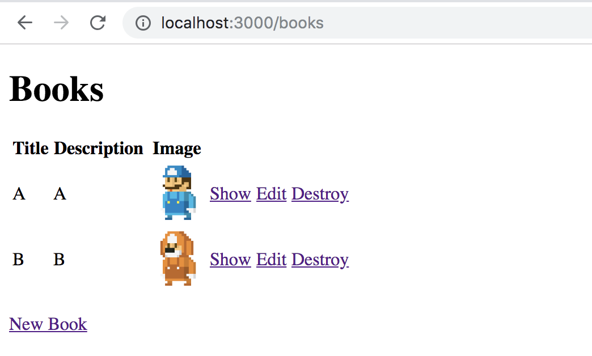
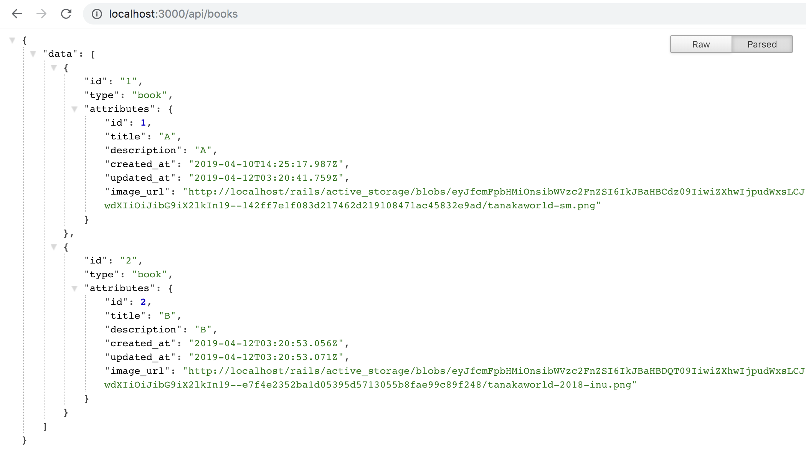
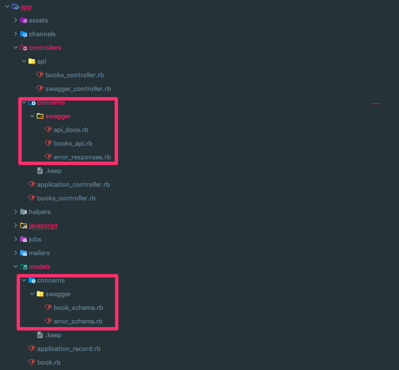

Rails で swagger-blocks と fastjson_api を組み合わせる (API定義編)
Rails プロジェクトで クライアント向けの APIClient を自動生成するときの構成を試してみた．
Swagger で記述した API 定義からコード生成する例はちらほら見かけるが，Netflix 製の fast_jsonapi を使った記事は見かけなかったので，まとめておく．
完成版のソースコードはこちら 👉 tanakaworld/swagger-blocks-fastjson-api
TL;DR;
Part1: API定義編 (本記事)
- Backend は Rails で API を実装
- JSON シリアライザとして，Netflix 製の fastjson_api
- API 定義は swagger-blocks を使用
Part2: コード生成編 (作成中)
- openapi-generator で TypeScript の APIClient を自動生成
Part3: 自動テスト編 (作成中)
- RSpec で Reqeuests 自動テスト
- committee-rails で Swagger 定義との整合性チェック
Scaffold Books
書籍情報の CRUD を題材に考える．
Rails 6.0.0.beta3 を使った．
scaffold で Books を生成し，画像アップロードは Active Storage を使う．
1 | $ bundle exec rails g scaffold books title:string description:text |
Active Storage を有効化し，Model / View / Controller で image の記述を追加する．
1 | $ bundle exec rails active_storage:install |
1 | # app/models/book.rb |

Serializer
Books 向けとエラーハンドリング用の Serializer を用意する．
1 | # Gemfile |
1 | $ bundle exec rails g serializer books |
1 | # app/serializers/book_serializer.rb |
API 実装
app/controllers/api/books_controller.rb を実装する．app/controllers/books_controller.rb とほぼ同じだが，APIレスポンス箇所で Serializer を使う．
render json: BookSerializer.new(@books).serialized_json
1 | class Api::BooksController < ApplicationController |
1 | # config/routes.rb |
/api/books のレスポンスはこうなる．

Swagger 定義のディレクトリ構成
各 controller 上に swgger 定義を普通に記述してもよいが，一瞬で見通しが悪くなる．
Swagger 定義と API 実装の記述箇所を分離するために次の構成にした．
（参考：Rails + swagger-blocks で OpenAPI 形式の API ドキュメントを作成する）

Controller に依存する定義は app/controllers/concerns に配置，swagger_path で API リクエストパスに対応する定義を記述する．
1 | # app/controllers/concerns/books_api.rb |
Model に依存する定義は app/models/concerns に配置し，主に swagger_schema で resource や request / response の形式を定義する．
1 | # app/models/concerns/books_schema.rb |
fastjson_api 向けの swagger-blocks ラッパーを実装
fast_jsonapi は jsonapi に準拠している．
この形式を各定義に書くのは冗長なので，JSON API 形式準拠したレスポンス形式を記述するラッパー fja_swagger_schema を実装した．swagger_schema の定義名とレスポンス形式が object or array を選択できるようにしている．
前者は Controller 側の記述で使い，後者は Model 側の記述で使う．
1 | # config/initializers/swagger_blocks.rb |
Model 側で記述した swagger_schema :Book を用いて fja_swagger_schema :Book で fastjson_api のレスポンス形式の定義が記述できる．
そして Controller 側の fja_response_schema :array, :Book で API レスポンス定義として使える．
swagger-blocks の記述から JSON を生成する
ここまでで記述してきた Model と Controller を集約し，Swagger::Blocks.build_root_json(SWAGGERED_CLASSES) によって Swagger JSON を生成する．
1 | # app/controllers/concerns/swagger/api_docs.rb |
デバッグ用に，ローカル開発中に Swagger 定義を確認できるエンドポイントを用意する．
1 | # app/controllers/api/swagger_controller.rb |
http://localhost:3000/api/swagger にアクセスすると次のような JSON が得られる．
定義が間違っているときはこの生成自体エラーになることが大半だが，生成できても意図しない動作するときなどのデバッグに使う．
swagger-ui とかに JSON を食わせて見やすくするなども可能．
1 | {"swagger":"2.0","info":{"version":"1.0.0","title":"swagger-blocks with fastjson_api","description":"swagger-blocks with fastjson_api"},"produces":["application/json"],"consumes":["application/json"],"paths":{"/api/books":{"get":{"operationId":"getBooks","tags":["sampleApp"],"parameters":[{"name":"id","in":"path","required":true,"type":"integer","format":"int64"}],"responses":{"200":{"description":"Books response","schema":{"type":"object","required":["data"],"properties":{"data":{"type":"array","items":{"$ref":"#/definitions/BookResponse"}}}}},"404":{"description":"Resource not found","schema":{"$ref":"#/definitions/ErrorOutput"}}}},"post":{"operationId":"createBook","tags":["sampleApp"],"consumes":["multipart/form-data"],"parameters":[{"name":"body","in":"body","required":true,"schema":{"$ref":"#/definitions/CreateBookRequest"}}],"responses":{"201":{"description":"Book response","schema":{"type":"object","required":["data"],"properties":{"data":{"type":"object","$ref":"#/definitions/BookResponse"}}}},"400":{"description":"Invalid parameters","schema":{"$ref":"#/definitions/ErrorOutput"}},"422":{"description":"Unprocessable Entity","schema":{"$ref":"#/definitions/ErrorOutput"}}}}},"/api/books/{id}":{"get":{"operationId":"getBook","tags":["sampleApp"],"parameters":[{"name":"id","in":"path","required":true,"type":"integer","format":"int64"}],"responses":{"200":{"description":"Book response","schema":{"type":"object","required":["data"],"properties":{"data":{"type":"object","$ref":"#/definitions/BookResponse"}}}},"404":{"description":"Resource not found","schema":{"$ref":"#/definitions/ErrorOutput"}}}},"put":{"operationId":"updateBook","tags":["sampleApp"],"consumes":["multipart/form-data"],"parameters":[{"name":"id","in":"path","required":true,"type":"integer","format":"int64"},{"name":"body","in":"body","required":true,"schema":{"$ref":"#/definitions/UpdateBookRequest"}}],"responses":{"200":{"description":"Book response","schema":{"type":"object","required":["data"],"properties":{"data":{"type":"object","$ref":"#/definitions/BookResponse"}}}},"400":{"description":"Invalid parameters","schema":{"$ref":"#/definitions/ErrorOutput"}},"422":{"description":"Unprocessable Entity","schema":{"$ref":"#/definitions/ErrorOutput"}},"404":{"description":"Resource not found","schema":{"$ref":"#/definitions/ErrorOutput"}}}},"delete":{"operationId":"deleteBook","tags":["sampleApp"],"parameters":[{"name":"id","in":"path","required":true,"type":"integer","format":"int64"}],"responses":{"204":{"description":"No content response","schema":{}},"400":{"description":"Invalid parameters","schema":{"$ref":"#/definitions/ErrorOutput"}},"422":{"description":"Unprocessable Entity","schema":{"$ref":"#/definitions/ErrorOutput"}}}}}},"definitions":{"Book":{"required":["title","description","image_url"],"additionalProperties":false,"properties":{"id":{"type":"integer"},"title":{"type":"string"},"description":{"type":"string"},"image_url":{"type":"string"},"created_at":{"type":"string"},"updated_at":{"type":"string"}}},"BookResponse":{"required":["id","type","attributes"],"additionalProperties":false,"properties":{"id":{"type":"string"},"type":{"type":"string"},"attributes":{"$ref":"#/definitions/Book"}}},"CreateBookRequest":{"additionalProperties":false,"properties":{"title":{"type":"string"},"description":{"type":"string"},"image":{"type":"object"}}},"UpdateBookRequest":{"additionalProperties":false,"properties":{"title":{"type":"string"},"description":{"type":"string"},"image":{"type":"object"}}},"ErrorOutput":{"required":["errors"],"additionalProperties":false,"properties":{"errors":{"type":"array","items":{"type":"string"}}}}}} |
TBA
- Part2: コード生成編
- Part3: 自動テスト編